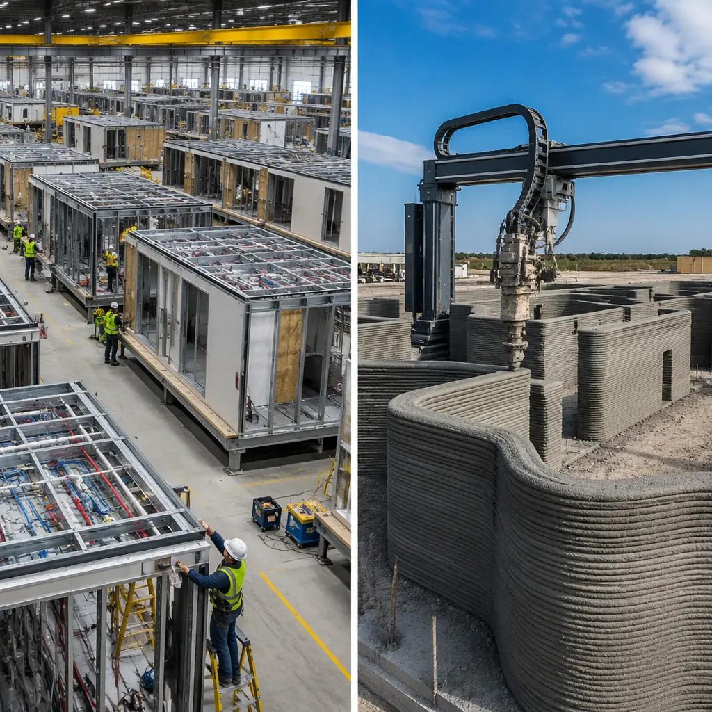
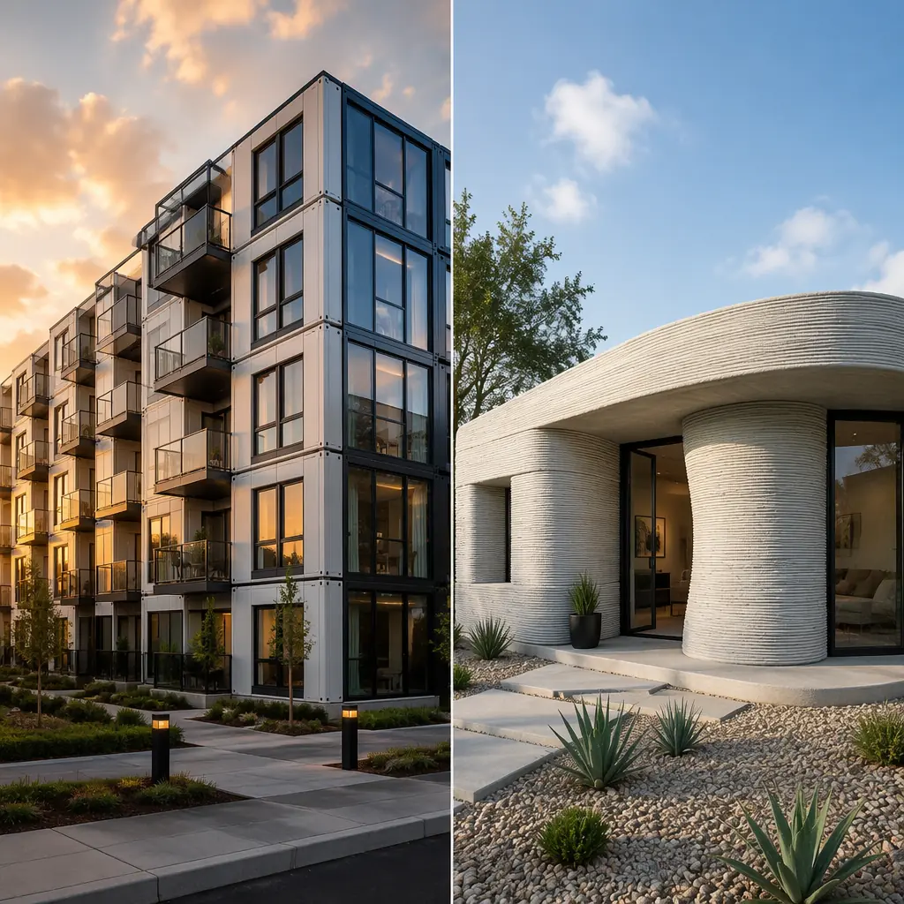

Two technologies are reshaping construction's fundamental equation of speed, cost, and labor: modular prefabrication — which has delivered 500+ commercial projects across 18 countries — and 3D concrete printing, which captured headlines with the first printed homes in 2018 and has since progressed to multi-story printed structures. For commercial developers evaluating both, the question is not which technology is "better" in the abstract, but which one is ready today for your specific project type, scale, and regulatory environment. This article compares modular and 3D printed construction across the dimensions that matter to developers: structural performance and code compliance, cost per square foot including all scopes, construction speed to occupancy, design flexibility and architectural expression, scalability to 50+ units, and the regulatory readiness of each technology for commercial projects in 2026.

The Fundamental Difference: Assembly Strategy vs Material Deposition
Modular construction and 3D printing represent fundamentally different answers to the same question: how do we move construction labor from the unpredictable, weather-exposed, quality-variable construction site into a controlled production environment? But they address different scopes within what a building requires:
Modular construction shifts 70–90% of total construction scope into the factory. A completed module leaving the factory includes structural steel frame, fire-rated wall and floor assemblies with gypsum board and paint, MEP rough-ins with tested plumbing and electrical circuits, windows, exterior cladding, interior doors, millwork, and flooring. The module is a finished, occupiable space — not a shell. On-site work is limited to foundation, module setting and connection, MEP inter-module tie-ins, corridor finishes, and site utilities. The factory builds the building; the site assembles it.
3D concrete printing shifts approximately 20–30% of scope into an automated process — specifically, the wall system. A 3D printer extrudes layers of concrete to form exterior and interior wall shells, typically leaving openings for windows and doors. What the printer does NOT produce: foundations (still cast in place), roof structure (still conventionally framed or trussed), floor slabs above grade (still cast or framed), MEP systems (still field-installed after printing), windows and doors (still field-installed), finishes (still field-applied), and insulation (still field-installed — printed concrete walls offer R-values of approximately R-1.5 to R-2.5 per inch, requiring supplemental insulation in most climate zones).
The scope difference matters enormously for project economics. Modular construction's 70–90% factory scope means the developer captures factory productivity — controlled environment, specialized labor, QC gates — on nearly the entire building. 3D printing's 20–30% automated scope means the developer captures automation benefits on walls only; the remaining 70–80% of the project is built conventionally, on-site, with conventional labor, weather exposure, and quality variability. Our modular vs traditional construction comparison quantifies the productivity gap between factory and site production.

Cost Comparison: Not Just Square Footage — Total Project Cost
Headline numbers comparing modular and 3D printed costs per square foot are misleading because they compare different scopes. A 3D printed "wall cost" of $15–25 per square foot of wall area excludes the foundation, roof, MEP, finishes, windows, and doors that a modular module includes. A fair comparison requires total project cost including all scopes, on a per-square-foot-of-finished-building basis:
| Cost Category | Modular (Factory-Built) | 3D Printed (Wall-Automated) | Traditional Site-Built |
|---|---|---|---|
| Structure & enclosure | $95–130/sqft (factory: steel frame, walls, roof, cladding, windows) | $35–55/sqft (printed walls only) + $60–80/sqft (conventional roof, windows, doors) | $110–150/sqft |
| MEP systems | $45–65/sqft (factory-installed, pre-tested) | $55–75/sqft (all field-installed after printing) | $55–75/sqft |
| Finishes | $35–50/sqft (factory-applied: gypsum, paint, flooring, millwork) | $40–60/sqft (all field-applied: stud furring, insulation, gypsum, paint, flooring) | $40–60/sqft |
| Foundation & site work | $20–35/sqft | $25–40/sqft (printed walls heavier, larger footings) | $20–35/sqft |
| Total (mid-range, 50+ unit project) | $195–280/sqft | $155–230/sqft (direct cost) + regulatory/risk premium | $225–320/sqft |
The direct-cost comparison appears to favor 3D printing at the per-square-foot level, but this comparison omits three cost categories that eliminate the apparent advantage for most commercial projects:
- Schedule carrying costs. A 3D printed project where 70–80% of scope is conventionally site-built follows a site-built schedule — 16–24 months for a 50-unit apartment building. Modular construction's parallel site-and-factory schedule delivers the same building in 10–14 months. At 7% construction loan interest on a $15 million project, each month of extended schedule costs approximately $87,500 in additional interest — a $350,000–$875,000 penalty for the longer schedule. Our modular ROI guide quantifies schedule-driven savings in detail.
- Regulatory risk and delay contingency. 3D printed construction currently operates in a code gray zone. The IBC does not have a prescriptive chapter for 3D printed concrete walls, which means every project requires an alternative means and methods submission under IBC Section 104.11 — a process that adds 3–6 months to the permitting timeline and carries approval risk. Modular construction, by contrast, operates under established code pathways: modules are reviewed as building components under IBC Chapter 17 or as industrial/modular buildings under state programs, with decades of precedent and published acceptance criteria (ICC-ES AC438 and AC454).
- Financing availability. Construction lenders underwrite modular projects using familiar frameworks: progress payment schedules tied to module production milestones, builder's risk policies with modular-specific endorsements, and standardized lien release mechanisms for factory-built components. For 3D printed projects, lenders lack standardized underwriting frameworks, which translates into higher equity requirements (35–50% vs 20–25% for modular), higher interest rates (typically 100–200 basis points above modular), or outright financing unavailability from conventional construction lenders.
When schedule, regulatory, and financing costs are included, the total cost of a 3D printed commercial project equals or exceeds modular for most project types at current technology maturity. The direct-cost per-square-foot advantage vanishes once the developer pays for the extended schedule, the regulatory delay, and the financing premium.
Structural Performance: Steel Frame vs Printed Concrete
Modular construction's structural system is proven, standardized, and code-recognized: hot-rolled or cold-formed steel frames designed to ASCE 7 load combinations, with documented connection details for module-to-module and module-to-foundation interfaces. The structural performance envelope is well-characterized across building heights (1–20 stories in current practice, with research programs targeting 30+), seismic design categories (A through E with engineered ductile connections), and wind zones (up to 180 mph design wind speeds with tested cladding attachment systems). Our seismic design article covers structural performance in high-seismic zones in depth.
3D printed concrete walls present a more complex structural picture. The printed material — typically a proprietary cementitious mix with fiber reinforcement — achieves compressive strengths of 4,000–6,000 psi, comparable to cast-in-place concrete. But printed walls lack the continuous vertical reinforcement that gives cast-in-place concrete walls their structural ductility. Horizontal reinforcing is typically placed between layers during printing; vertical reinforcing requires post-printed core grouting of cells left open during printing — a labor-intensive process that partially defeats the automation advantage. The layered deposition creates cold joints at every layer interface, and the bond strength between layers is significantly lower than the material's monolithic strength, creating potential failure planes under lateral loading.
The structural consequence: 3D printed walls are currently limited to bearing-wall applications in low-rise (1–3 story) structures in low-seismic regions, with project-specific alternative means and methods approval required. The technology is not yet approved for use in seismic design categories D and above, high-wind regions with design wind speeds exceeding 140 mph, or structures taller than three stories without a separate structural frame — which means the printed walls function as architectural infill, not as the primary lateral force-resisting system.
Design Flexibility and Architectural Expression
Modular construction's reputation for "boxy" architecture reflects early-generation modular projects, not current capability. Modern modular design works within a module grid — typically 3.6 m to 4.8 m (12–16 ft) wide and up to 18 m (60 ft) long — but the modules can be combined, cantilevered, and stacked with offsets to create architectural variety. Exterior cladding options span the full range of commercial materials: curtain wall, metal panel, fiber cement, brick veneer, terracotta rainscreen, and EIFS. The module grid is a design parameter, not a design constraint, and architects who engage with it early produce buildings that are visually indistinguishable from site-built construction. Our design flexibility article covers architectural possibilities in detail.
3D printed construction offers a genuinely different aesthetic vocabulary: curved walls, organic geometries, and layered surface textures that would be prohibitively expensive in any other construction method. This is the technology's strongest architectural advantage. However, the design freedom applies primarily to walls: floors, roofs, windows, doors, and MEP systems are still conventionally built, which means the organic geometries possible in walls must interface with rectangular openings and planar surfaces elsewhere in the building — an integration challenge that has produced awkward architectural results in early projects.
For commercial developers, the practical question is whether the architectural differentiation of printed walls justifies the regulatory friction, financing premium, and schedule extension. For a boutique hotel or cultural institution where architectural distinction drives revenue, the answer may be yes. For a 200-unit apartment building, 120-room hotel, or 50,000 sqft office building where repeatable, efficient floor plans drive ROI, modular construction's proven design vocabulary — which is far more flexible than its reputation suggests — delivers better project economics.

Scalability: From Prototype to Production
The comparison that matters most to commercial developers is not which technology can build one demonstrator unit faster or cheaper — it is which technology can build 50, 100, or 500 units with predictable cost, schedule, and quality. This is where the technologies diverge most sharply:
Modular construction scales linearly. A factory producing 4 modules per day can produce 1,000 modules (approximately 250 apartment units) per year. Adding a second production line doubles output. The factory's production rate is limited by physical space and labor, not by fundamental technology constraints. MODURA's 500+ projects across 18 countries demonstrate scalability from single-unit additions to 300-unit apartment complexes.
3D printing does not yet scale. Current printers produce one wall layer at one location. Printing speed is fundamentally limited by the concrete curing rate between layers — typically 10–20 minutes per layer at 10–15 mm layer height, yielding approximately 10–15 square meters of wall area per day per printer. A 200-unit apartment project with 40,000 square meters of wall area would require approximately 270 printer-days — or multiple printers operating in parallel, each requiring its own setup, calibration, material supply, and operator. The logistics of operating 10+ printers simultaneously on a single construction site — each depositing wet concrete that must cure before work can continue — have not been demonstrated at commercial scale.
The scalability gap is reinforced by labor availability. Modular factories employ specialized production workers — welders, electricians, plumbers, drywall finishers — who perform their trade in a controlled environment using the same skills they would apply on a construction site. 3D printing requires printer operators, material technicians, and robotic system maintenance personnel — skills that are scarce in the construction labor market and require specialized training. A modular factory can staff up by hiring experienced construction tradespeople; a 3D printing operation must either train construction workers on robotic systems or recruit from manufacturing and robotics — neither path is fast or cheap at scale.
Which Technology for Which Project: A Decision Framework
For commercial developers in 2026, the technology choice follows a clear decision framework based on project type, scale, and risk tolerance:
- Choose modular construction when: building multi-story commercial projects (3–20 stories), requiring code-compliant fire-rated assemblies for multi-family or hospitality occupancy, operating on financing that requires standardized underwriting, building in jurisdictions with established building code enforcement (any municipality that follows IBC/IRC), needing predictable 10–14 month schedules for 50+ unit projects, or requiring structural performance in seismic or high-wind regions.
- Consider 3D printed construction when: building single-story or low-rise (1–3 story) structures in low-seismic, low-wind regions, seeking architectural differentiation through curved/organic wall geometries that justify regulatory friction, operating with patient capital that can absorb 3–6 month permitting delays and financing premiums, building in jurisdictions with progressive building officials willing to approve alternative means and methods, or developing demonstration projects that prioritize technology visibility over project economics.
The technologies are not mutually exclusive — and the most forward-looking developers are watching for hybrid approaches. A 3D printed wall shell combined with modular MEP racks factory-fabricated and inserted into printed wall cavities could capture the architectural freedom of printing with the MEP quality and speed of modular. Several research programs are exploring this integration, but commercial deployment is likely 5–8 years away.
For developers making decisions in 2026, the framework is clear: modular construction is the proven, scalable, code-compliant technology for commercial projects at any scale. 3D printed construction is an exciting technology with genuine architectural potential — but it is not yet a commercially viable alternative for multi-story, multi-unit commercial projects. The developers who benefit most from 3D printing today are those who can afford to invest in its development, not those who need a building delivered on time, on budget, and to code. Our turnkey modular construction guide and cost per square foot analysis provide the project-level detail developers need to make informed technology decisions.